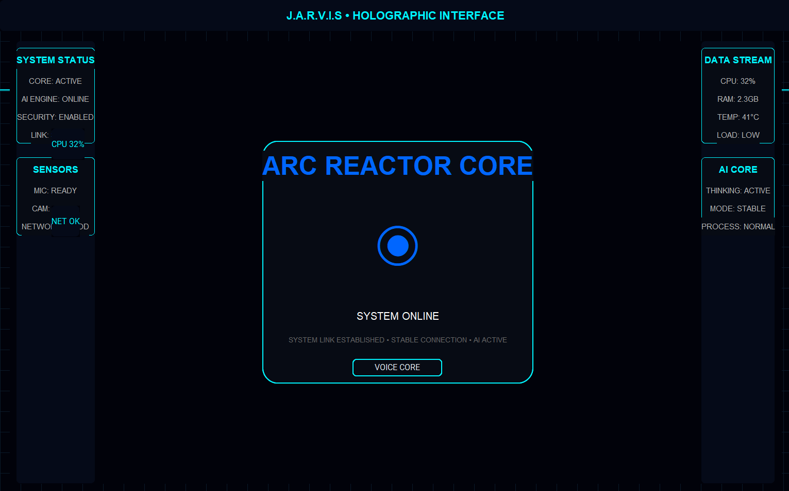

Python Assistant е софтуерен проект за автоматизация на задачи и базов интелигентен помощник. Обработва команди и изпълнява логически операции.
Проектът е фокусиран върху автоматизация, обработка на данни и разширяема архитектура.
Използвани са функции, цикли, условни оператори и модулна структура.
Целта е лесно надграждане и добавяне на нови функции без промяна на основния код.

Командна система, която разпознава вход от потребителя и изпълнява съответно действие. Лесно разширяема чрез добавяне на нови команди.
Изпълнение на автоматични задачи без ръчна намеса – процеси, операции и действия.
Модулна архитектура, позволяваща добавяне на нови функции, API интеграции и AI модули.
Python, Automation, Scripting